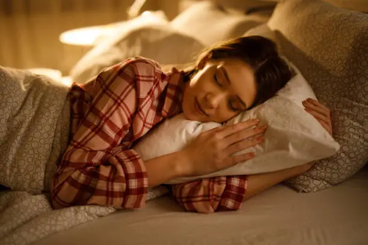
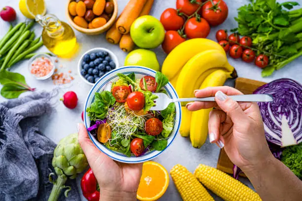
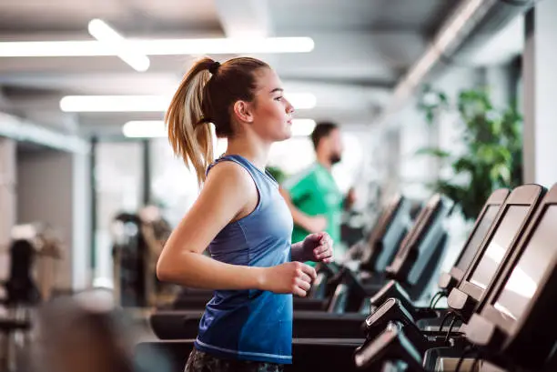

Rest & Sleep
Tiredness makes mood swings harder to manage. Try to keep a regular sleep schedule and give yourself permission to rest more than usual during your cycle.
Simple, everyday things that can help during your cycle.

Tiredness makes mood swings harder to manage. Try to keep a regular sleep schedule and give yourself permission to rest more than usual during your cycle.

Staying hydrated and eating balanced meals can ease both physical discomfort and emotional ups and downs. Small, regular meals often help more than skipping and overeating.

Light movement, like walking or stretching, can lift mood and ease tension. It doesn't need to be intense, even a short walk outside can help.
A warm compress or heating pad can ease cramps, and less physical pain often means steadier mood through the day.
Talking to someone you trust on a harder day can make a real difference. You don't have to manage everything alone.
If mood swings feel severe, last most of the month, or affect daily life, it's worth speaking with a doctor about it rather than managing alone.